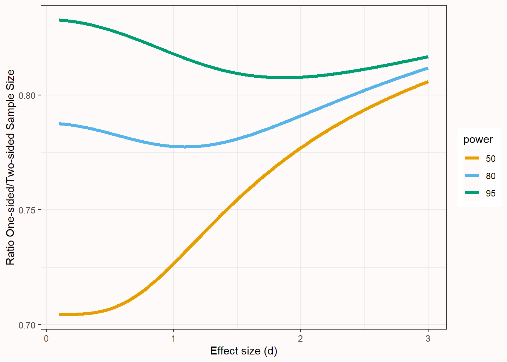
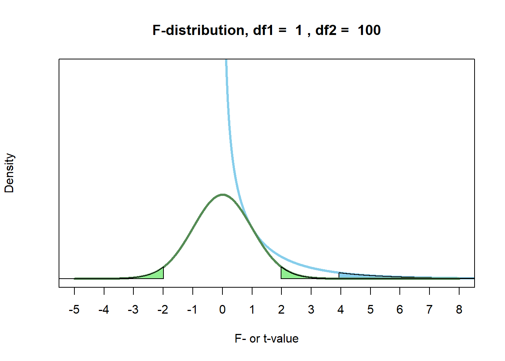

5 Asking Statistical Questions
At the core of the design of a new study is the evaluation of its information quality: the potential of a particular dataset for achieving a given analysis goal by employing data analysis methods and considering a given utility (Kenett et al., 2016). The goal of data collection is to gain information through empirical research where observations are collected and analyzed, often through statistical models. Three approaches to statistical modelling can be distinguished Shmueli (2010): Description, explanation, and prediction, which are discussed below. The utility often depends on which effects are deemed interesting. A thorough evaluation of the information quality of a study therefore depends on clearly specifying the goal of data collection, the statistical modelling approach that is chosen, and the usefulness of the data to draw conclusions about effects of interest with the chosen analysis method. A study with low information quality might not be worth performing, as the data that will be collected has low potential to achieve the analysis goal.
5.1 Description
Description aims to answer questions about features of the empirical manifestation of some phenomenon. Description can involve unique events (e.g., case studies of single patients) and classes of events (e.g., patients with a certain disease). Examples of features of interest are duration (how long), quantity (how many), location (where), etc.
An example of a descriptive question is research by Kinsey, who studied the sexual behavior and experiences of Americans in a time that very little scientific research was available on this topic. He used interviews that provided the statistical basis to draw conclusions about sexuality in the United States, which, at the time, challenged conventional beliefs about sexuality.
Descriptive research questions are answered through estimation statistics. The informational value of an estimation study is determined by the amount of observations (the more observations, the higher the precision of the estimates) and the sampling plan (the more representative the sample, the lower the sample selection bias, which increases the ability to generalize from the sample to the population), and the reliability of the measure.
Descriptive research questions are sometimes seen as less exciting than explanation or prediction questions (Gerring, 2012), but they are an essential building block of theory formation (Scheel et al., 2021). Although estimation question often focus on the mean score of a measure, accurate estimates of the variance of a measure are extremely valuable as well. The variance of a measure is essential information in a well-informed sample size justification, both when planning for accuracy, as when performing an a-priori power analysis.
5.2 Prediction
The goal in predictive modeling is to apply an algorithm or a statistical model to predict future observations (Shmueli, 2010). For example, during the COVID-19 pandemic a large number of models were created that combined variables to estimate the risk that people would be infected with COVID, or that people who were infected would experience negative effects on their health (Wynants et al., 2020). Ideally, the goal is to develop a prediction model that accurately captures the regularities in its training data, and that generalizes well to unseen data. There is a bias-variance trade off between these two goals, and researchers need to decide how much bias should be reduced which increases the variance, or vice-versa (Yarkoni & Westfall, 2017). The goal in prediction is to minimize prediction error. A common method to evaluate prediction errors is cross-validation, where it is examined whether a model developed on a training dataset generalizes to a holdout dataset. The development of prediction models is becoming increasingly popular with the rise of machine learning approaches.
5.3 Explanation
The use of statistical models concerns tests of explanatory theories. In this case, statistical models are used to test causal assumptions, or explanations that we derive from theories. Meehl (1990a) reminds us of the important distinction between a substantive theory, a statistical hypothesis, and observations. Statistical inference is only involved in drawing conclusions about the statistical hypothesis. Observations can lead to the conclusion that the statistical hypothesis is confirmed (or not), but this conclusion does not directly translate into corroboration for the theory. Platt (1964) refers to the systematic application of statistical tests to accumulate knowledge as strong inference. It consists of 1) specifying alternative hypotheses, 2) designing an experiment that can corroborate one hypothesis and falsify another, and 3) performing the experiment. This cycle can be repeated to test a number of hypotheses until one hypothesis that can explain the observed data remains. Platt notes how entertaining multiple alternative hypotheses prevents researchers from becoming too attached to a single hypothesis. When designing a new experiment, researchers should ask themselves what Platt calls ‘The Question’: “But sir, what hypothesis does your experiment disprove?”.
We never test a theory in isolation, but always include auxiliary hypotheses about the measures and instruments that are used in a study, the conditions realized in the experiment, up to the ceteris paribus clause that assumes “all other things are equal”. The best experimental set-up can rarely by ‘deduced’ from theory, and requires premisses that are tacitly taken for granted. As Hempel (1966) states: “Reliance on auxiliary hypotheses, as we shall see, is the rule rather than the exception in the testing of scientific hypotheses; and it has an important consequence for the question whether an unfavorable test finding, i.e., one that shows I to be false, can be held to disprove the hypothesis under investigation.” Therefore, it is never clear if a failure to corroborate a theoretical prediction should be blamed on the theory or the auxiliary hypotheses. To generate reliable explanatory theories, researchers therefore have to perform lines of research in which auxiliary hypotheses are systematically tested (Uygun Tunç & Tunç, 2022).
5.4 Loosening and Tightening
For each of the three questions above, we can ask questions about description, prediction, and explanation during a loosening phase when doing research, or during a tightening phase (Fiedler, 2004). The distinction is relative. During the loosening stage, the focus is on creating variation that provides the source for new ideas. During the tightening stage, selection takes place with the goal to distinguish useful variants from less useful variants. In descriptive research, an unstructured interview is more aligned with the loosening phase, while a structured interview is more aligned with the tightening phase. In prediction, building a prediction model based on the training set is the loosening phase, while evaluation the prediction error in the holdout dataset is the tightening phase. In explanation, exploratory experimentation functions to generate hypotheses, while hypothesis tests function to distinguish theories that make predictions that are corroborated from those theories which predictions are not corroborated.
It is important to realize whether your goal is to generate new ideas, or to test new ideas. Researchers are often not explicit about the stage their research is in, which runs the risk of trying to test hypotheses prematurely (Scheel et al., 2021). Clinical trials research is more explicit about the different phases of research, and distinguishes Phase 1, Phase 2, Phase 3, and Phase 4 trials. In a Phase 1 trial researchers evaluate the safety of a new drug or intervention in a small group of non-randomized (often healthy) volunteers, by examining how much of a drug is safe to give, while monitoring a range of possible side effects. A phase 2 trial are often performed with patients as participants, and can focus in more detail on finding the definite dose. The goal is to systematically explore a range of parameters (e.g., the intensity of a stimulus) to identify boundary conditions (Dubin, 1969). A phase 3 trial is a large randomized controlled trial with the goal to test the effectiveness of the new intervention in practice. Phase 3 trials require a prespecified statistical analysis plan that strictly controls error rates. Finally, a Phase 4 trial examines long term safety and generalizability. Compared to a Phase 3 trial, there is more loosening, as researchers explore the possibility of interactions with other drugs, or moderating effects in certain subgroups of the population. In clinical trials, a Phase 3 trial requires a huge amount of preparation, and is not undertaken lightly.

5.5 Three Statistical Philosophies
Royall (1997) distinguishes three questions one can ask:
- What do I believe, now that I have this observation?
- What should I do, now that I have this observation?
- What does this observation tell me about A versus B? (How should I interpret this observation as evidence regarding A versus B?)
One useful metaphor for thinking about these differences is if we look at Hinduism, where there are three ways to reach enlightenment: The Bhakti yoga, or the Path of Devotion, the Karma yoga, or the Path of Action, the Jnana yoga, or the Path of Knowledge. The three corresponding statistical paths are Bayesian statistics, which focuses on updating beliefs, Neyman-Pearson statistics, which focuses on making decisions about how to act, and likelihood approaches, which focus on quantifying the evidence or knowledge gained from the data. Just like in Hinduism the different paths are not mutually exclusive, and the emphasis on these three yoga’s differs between individuals, so will scientists differ in their emphasis of their preferred approach to statistics.
The three approaches to statistical modelling (description, prediction, and explanation) can be examined from each the three statistical philosophies (e.g., frequentist estimation, maximum likelihood estimation, and Bayesian estimation, or Neyman-Pearson hypothesis tests, likelihood ratio tests, and Bayes factors). Bayesian approaches start from a specified prior belief, and use the data to update their belief. Frequentist procedures focus on methodological procedures that allow researchers to make inferences that control the probability of error in the long run. Likelihood approaches focus on quantifying the evidential value in the observed data. When used knowledgeably, these approaches often yield very similar inferences (Dongen et al., 2019; Lakens et al., 2020; Tendeiro & Kiers, 2019). Jeffreys (1939), who developed a Bayesian hypothesis test, noted the following when comparing his Bayesian hypothesis test against frequentist methods proposed by Fisher:
I have in fact been struck repeatedly in my own work, after being led on general principles to a solution of a problem, to find that Fisher had already grasped the essentials by some brilliant piece of common sense, and that his results would be either identical with mine or would differ only in cases where we should both be very doubtful. As a matter of fact I have applied my significance tests to numerous applications that have also been worked out by Fisher’s, and have not yet found a disagreement in the actual decisions reached.
At the same time, each approach is based on different principles, and allows for specific inferences. For example, a Neyman-Pearson approach does not quantify evidence, and a Bayesian approach can lead conclusions about the relative support for one over another hypothesis, given specified priors, while ignoring the rate at which such a conclusion would be misleading. Understanding these basic principles is useful, as criticisms on statistical practices (e.g., computing p-values) always boil down to a disagreement about the principles that different statistical philosophies are built on. However, when we survey the literature, we rarely see the viewpoint that all approaches to statistical inferences, including p values, provide answers to specific questions a researcher might want to ask. Instead, statisticians often engage in what I call the statistician’s fallacy — a declaration of what they believe researchers really “want to know” without limiting the usefulness of their preferred statistical question to a specific context (Lakens, 2021). The most well-known example of the statistician’s fallacy is provided by Cohen (1994) when discussing null-hypothesis significance testing:
What’s wrong with NHST? Well, among many other things, it does not tell us what we want to know, and we so much want to know what we want to know that, out of desperation, we nevertheless believe that it does! What we want to know is ‘Given these data, what is the probability that H0 is true?’
Different statisticians will argue what you actually “want to know” is the posterior probability of a hypothesis, the false-positive risk, the effect size and its confidence interval, the likelihood, the Bayes factor, or the severity with which a hypothesis has been tested. However, it is up to you to choose a statistical strategy that matches the question you want the ask (Hand, 1994).
5.6 Falsification
As we have seen above scientists can adopt a Bayesian perspective, and try to quantify their belief in the probability that a hypothesis is true, or they can make claims based on frequentist long run probabilities that have a low probability of being an error. The falsificationist philosophy of Karl Popper is built on this second approach:
Instead of discussing the ‘probability’ of a hypothesis we should try to assess what tests, what trials, it has withstood; that is, we should try to assess how far it has been able to prove its fitness to survive by standing up to tests. In brief, we should try to assess how far it has been ‘corroborated’.
It is important to distinguish dogmatic falsificationism - which Karl Popper and Imre Lakatos criticized in their philosophical work - from naïve falsificationism and sophisticated methodological falsificationism. Dogmatic falsificationism proposes a clear distinction between theory and facts, and argues that facts (observations) can falsify theories. Lakatos (1978) (p. 13) summarizes this view as: “the theoretician proposes, the experimenter - in the name of Nature - disposes”. Lakatos argues against this idea, because “there are and can be no sensations unimpregnated by expectation and therefore there is no natural (i.e. psychological) demarcation between observational and theoretical propositions.” The facts we observe are themselves influenced, at least to some extent, by our theories. Dogmatic falsificationism also argues that the truth-value of observational statements can be derived from facts alone. Popper (2002) criticized this view, and argued that our direct experiences can not logically justify statements (p. 87): “Experiences can motivate a decision, and hence an acceptance or a rejection of a statement, but a basic statement cannot be justified by them — no more than by thumping the table.” Finally, Lakatos criticizes the demarcation criterion of dogmatic falsificationists, that “only those theories are ‘scientific’ which forbid certain observable states of affairs and therefore are factually disprovable”. Instead, he argues “exactly the most admired scientific theories simply fail to forbid any observable state of affairs.” The reason for this is that theories often only make predictions in combination with a ceteris paribus clause (as discussed above), and one therefore has to decide if failed predictions should be relegated to the theory, or the ceteris paribus clause.
What is the difference between dogmatic falsificationism and naïve or methodological falsificationism as proposed by Popper? First, Popper accepts there is never a strict distinction between theories and facts, but relegates the influence of theories to “unproblematic background knowledge” that is (tentatively) accepted while testing a theory. These are ‘auxiliary hypotheses’ that, according to Popper, should be used as sparingly as possible. Second, methodological falsificationism separates rejection and disproof. In methodological falsificationism the truth-value of statements is not disproven by facts, but it can be rejected based on agreed upon methodological procedures. These methodological procedures are never certain. As explained in the section on interpreting p-values, Popper argues:
Science does not rest upon solid bedrock. The bold structure of its theories rises, as it were, above a swamp. It is like a building erected on piles. The piles are driven down from above into the swamp, but not down to any natural or ‘given’ base; and if we stop driving the piles deeper, it is not because we have reached firm ground. We simply stop when we are satisfied that the piles are firm enough to carry the structure, at least for the time being.
In methodological falsificationism the demarcation criterion is much more liberal than in dogmatic falsificationism. For example, probabilistic theories are now deemed ‘scientific’ because these can be made ‘falsifiable’ by “specifying certain rejection rules which may render statistically interpreted evidence ‘inconsistent’ with the probabilistic theory” (Lakatos, 1978, p. 25).
Popper and especially Lakatos developed methodological falsification further into sophisticated falsificationism. Sophisticated methodological falsificationism stresses that science is often not simply about testing a theory in an experiment, but testing different theories or a series of theories against each other in lines of experiments. Furthermore, it acknowledges that in practice confirmation also plays an important role in deciding between competing theories. Lakatos attempted to integrate views by Thomas Kuhn (1962) on how scientific knowledge was generated in practice, but replaced Kuhn’s social and psychological processes by logical and methodological processes. In sophisticated methodological falsificationism a theory is falsified if the novel theory 1) predicts novel facts, 2) is able to explain the success of the previous theory, and 3) some of the novel predictions are corroborated. Falsification no longer occurs in single tests of predictions, but through progressive and degenerative research lines. Of course, it is difficult to know if a research line is progressing or degenerating in a short time scale. According to Meehl (2004) progressive research lines lead to theories appearing in textbooks, discussion meetings about the theory disappear from conferences, and the theory is no longer tested but mainly improved. Meehl refers to this endpoint as ‘ensconcement’ and suggests fifty-year ensconcement as a good proxy for the truth (even though some theories, as those by Newton, can take longer to be falsified). Note that scientists untrained in philosophy of science often incorrectly characterize Popper’s ideas about falsification as dogmatic falsificationism, without realizing Popper’s sophisticated methodological falsificationism was a direct criticism of dogmatic falsificationism.
5.7 Severe Tests
A central feature of methodological falsificationism is to design experiments that provide severe tests of hypotheses. According to Mayo (2018) “a claim is severely tested to the extent it has been subjected to and passed a test that probably would have found flaws, were they present.” Severe tests are not the only goal in science - after all, tautologies can be severely tested - and the aim of severe tests should be pursued together with the goal to test interesting theoretical or practical questions. But they are seen as a desireable feature, as nicely expressed by the physicist Richard Feynman (1974): “I’m talking about a specific, extra type of integrity that is not lying, but bending over backwards to show how you’re maybe wrong, that you ought to do when acting as a scientist.” The idea of severe (or ‘risky’) tests is well explained in the article “Appraising and amending theories: The strategy of Lakatosian defense and two principles that warrant it” by Paul Meehl (1990a):
A theory is corroborated to the extent that we have subjected it to such risky tests; the more dangerous tests it has survived, the better corroborated it is. If I tell you that Meehl’s theory of climate predicts that it will rain sometime next April, and this turns out to be the case, you will not be much impressed with my “predictive success.” Nor will you be impressed if I predict more rain in April than in May, even showing three asterisks (for p < .001) in my t-test table! If I predict from my theory that it will rain on 7 of the 30 days of April, and it rains on exactly 7, you might perk up your ears a bit, but still you would be inclined to think of this as a “lucky coincidence.” But suppose that I specify which 7 days in April it will rain and ring the bell; then you will start getting seriously interested in Meehl’s meteorological conjectures. Finally, if I tell you that on April 4th it will rain 1.7 inches (.66 cm), and on April 9th, 2.3 inches (.90 cm) and so forth, and get seven of these correct within reasonable tolerance, you will begin to think that Meehl’s theory must have a lot going for it. You may believe that Meehl’s theory of the weather, like all theories, is, when taken literally, false, since probably all theories are false in the eyes of God, but you will at least say, to use Popper’s language, that it is beginning to look as if Meehl’s theory has considerable verisimilitude, that is, “truth-likeness.”
To appreciate the concept of severe tests, it is worth reflecting on what insevere tests look like. Imagine a researcher who collects data, and after looking at which statistical tests yield a statistically significant result, thinks up a theory. What is the problem of this practice, known as hypothesizing after results are known, or HARKing (Kerr, 1998)? After all, the hypothesis this researcher comes up with could be correct! The reason that HARKing in science is problematic is that the statistical test is completely insevere: There is no way that the statistical test could have proven the claim wrong, if it was wrong. Again, the claim may be correct, but the test does not increase our confidence in this in any way. Mayo (2018) calls this: Bad Evidence, No Test (BENT). A similar problem occurs when researchers engage in questionable research practices. As these practices can substantially inflate the Type 1 error rate, they greatly increase the probability a test will corroborate a prediction, even if that prediction is wrong. Again, the severity of the test is impacted. Of course, you can use questionable research practices and reach a correct conclusion. But after p-hacking, the test has a greatly reduced capacity to prove the researcher wrong. If this lack of a severe test is not transparently communicated, readers are fooled into believing a claim has been severely tested, when it has not. These problems can be mitigated by preregistering the statistical analysis plan (Lakens, 2019).
5.8 Risky Predictions
The goal of a hypothesis test is to carefully examine whether predictions that are derived from a scientific theory hold up under scrutiny. Not all predictions we can test are equally exciting. For example, if a researcher asks two groups to report their mood on a scale from 1 to 7, and then predicts the difference between these groups will fall within a range of -6 to +6, we know in advance that it must be so. No result can falsify the prediction, and therefore finding a result that corroborates the prediction is completely trivial and a waste of time.
The most common division of states of the world that are predicted and that are not predicted by a theory in null-hypothesis significance testing is the following: An effect of exactly zero is not predicted by a theory, and all other effects are taken to corroborate the theoretical prediction. Here, I want to explain why this is a very weak hypothesis test. In certain lines of research, it might even be a pretty trivial prediction. It is quite easy to perform much stronger tests of hypotheses. One way would be to reduce the alpha level of a test, as this increases the probability of being proven wrong, when the prediction is wrong. But it is also possible to increase the riskiness of a test by reducing which outcomes are still considered support for the prediction.
Take a look at the three circles below. Each circle represents all possible outcomes of an empirical test of a theory. The blue line illustrates the state of the world that was observed in a (hypothetical) perfectly accurate study. The line could have fallen anywhere on the circle. We performed a study and found one specific outcome. The black area in the circle represents the states of the world that will be interpreted as falsifying our prediction, whereas the white area illustrates the states in the world we predicted, and that will be interpreted as corroborating our prediction.

In the figure on the left, only a tiny fraction of states of the world will falsify our prediction. This represents a hypothesis test where only an infinitely small portion of all possible states of the world is not in line with the prediction. A common example is a two-sided null-hypothesis significance test, which forbids (and tries to reject) only the state of the world where the true effect size is exactly zero.
In the middle circle, 50% of all possible outcomes falsify the prediction, and 50% corroborates it. A common example is a one-sided null-hypothesis test. If you predict the mean is larger than zero, this prediction is falsified by all states of the world where the true effect is either equal to zero, or smaller than zero. This means that half of all possible states of the world can no longer be interpreted as corroborating your prediction. The blue line, or observed state of the world in the experiment, happens to fall in the white area for the middle circle, so we can still conclude the prediction is supported. However, our prediction was already slightly riskier than in the circle on the left representing a two-sided test.
In the scenario in the right circle, almost all possible outcomes are not in line with our prediction – only 5% of the circle is white. Again, the blue line, our observed outcome, falls in this white area, and our prediction is confirmed. However, now our prediction is confirmed in a very risky test. There were many ways in which we could be wrong – but we were right regardless.
Although our prediction is confirmed in all three scenarios above, philosophers of science such as Popper and Lakatos would be most impressed after your prediction has withstood the most severe test (i.e., in the scenario illustrated by the right circle). Our prediction was most specific: 95% of possible outcomes were judged as falsifying our prediction, and only 5% of possible outcomes would be interpreted as support for our theory. Despite this high hurdle, our prediction was corroborated. Compare this to the scenario on the left – almost any outcome would have supported our theory. That our prediction was confirmed in the scenario in the left circle is hardly surprising.
Making more risky range predictions has some important benefits over the widespread use of null-hypothesis tests. These benefits mean that even if a null-hypothesis test is defensible, it would be preferable if you could test a range prediction. Making a more risky prediction gives your theory higher verisimilitude. You will get more credit in darts when you correctly predict you will hit the bullseye, than when you correctly predict you will hit the board. Many sports work like this, such as figure skating or gymnastics. The riskier the routine you perform, the more points you can score, since there were many ways the routine could have failed if you lacked the skill. Similarly, you get more credit for the predictive power of your theory when you correctly predict an effect will fall within 0.5 scale points of 8 on a 10 point scale, than when you predict the effect will be larger than the midpoint of the scale.
Meehl (1967) compared the use of statistical tests in psychology and physics and notes that in physics researchers make point predictions. One way to test point predictions is to examine whether the observed mean falls between an upper and lower bound. In chapter 9 we will discuss how to perform such tests, such as equivalence tests or minimum effect tests, in practice. Although equivalence tests are often used to test whether an effect falls within a specified range around 0, and interval hypothesis test can be performed around any value, and thereby used to perform more risky tests of hypotheses.
Although Meehl prefers point predictions that lie within a certain range, he doesn’t completely reject the use of null-hypothesis significance testing. When he asks ‘Is it ever correct to use null-hypothesis significance tests?’ his own answer is ‘Of course it is’ (Meehl, 1990a). There are times, such as very early in research lines, where researchers do not have good enough models, or reliable existing data, to make point or range predictions. Other times, two competing theories are not more precise than that one predicts rats in a maze will learn something, while the other theory predicts the rats will learn nothing. As Meehl (1990a) writes: “When I was a rat psychologist, I unabashedly employed significance testing in latent-learning experiments; looking back I see no reason to fault myself for having done so in the light of my present methodological views.”
There are no good or bad statistical approaches – all statistical approaches are provide an answer to a specific question. It makes sense to allow traditional null-hypothesis tests early in research lines, when theories do not make more specific predictions than that ‘something’ will happen. But we should also push ourselves to develop theories that make more precise range predictions, and then test these more specific predictions in interval hypothesis tests. More mature theories should be able to predict effects in some range – even when these ranges are relatively wide.
5.9 Do You Really Want to Test a Hypothesis?

A hypothesis test is a very specific answer to a very specific question. We can use a dart game as a metaphor for the question a hypothesis test aims to answer. In essence, both a dart game and a hypothesis test are a methodological procedure to make a directional prediction: Is A better or worse than B? In a dart game we very often compare two players, and the question is whether we should act as if player A is the best, or player B is the best. In a hypothesis test, we compare two hypotheses, and the question is whether we should act as if the null hypothesis is true, or whether the alternative hypothesis is true.
Historically, researchers have often been interested in testing hypotheses to examine whether predictions that are derived from a scientific theory hold up under scrutiny. Some philosophies of science (but not all) value theories that are able to make predictions. If a darter wants to convince you they are a good player, they can make a prediction (‘the next arrow will hit the bulls-eye’), throw a dart, and impress you by hitting the bulls-eye. When a researcher uses a theory to make a prediction, collects data, and observes can claim based on a predefined methodological procedure that the results confirm their prediction, the idea is you are impressed by the predictive validity of a theory (de Groot, 1969). The test supports the idea that the theory is a useful starting point to generate predictions about reality. Philosophers of science such as Popper call this ‘verisimilitude’– the theory is in some way related to the truth, and it has some ‘truth-likeness’.
In order to be impressed when a prediction is confirmed, the prediction must be able to be wrong. In other words, a theoretical prediction needs to be falsifiable. If our predictions concern the presence or absence of clearly observable entities (e.g., the existence of a black swan) it is relatively straightforward to divide all possible states of the world into a set that is predicted by our theory (e.g., all swans are white), and a set that is not predicted by our theory (e.g., swans can have other colors than white). However, many scientific questions concern probabilistic events where single observations contain noise due to random variation – rats have a certain probability to develop a tumor, people have a certain probability to buy a product, or particles have a certain probability to appear after a collision. If we want to forbid certain outcomes of our test when measuring probabilistic events, we can divide the states of the world based on the probability that some result will be observed.

Just because a hypothesis test can be performed, does not mean it is interesting. A hypothesis test is most useful when 1) both data generating models that are decided between have some plausibility, and 2) it is possible to apply an informative methodological procedure.
First, the two competing models should both be good players. Just as in a dart game there would be very little interest if I played Michael van Gerwen (the world champion at the time of writing) to decide who the better dart player is. Since I do not play darts very well, a game between the two of us would not be interesting to watch. Similarly, it is sometimes completely uninteresting to compare two data generating models, one representing the state of the world when there is no effect, and another representing the state of the world when there is some effect, because in some cases the absence of an effect is extremely implausible.
Second, for a hypothesis test to be interesting you need to have designed an informative study. When designing a study, you need to be able to make sure that the methodological rule provides a severe test, where you are likely to corroborate a prediction if it is correct, while at the same time fail to corroborate a prediction when it is wrong (Mayo, 2018). If the world champion in darts and I stand 20 inches away from a dart board and can just push the dart in the location where we want it to end up, it is not possible to show my lack of skill. If we are both are blindfolded and throwing the darts from 100 feet, it is not possible for the world champion to display their skill. In a hypothesis test, the statistical severity of a test is determined by the error rates. Therefore, a researcher needs to be able to adequately control error rates to perform a test of a hypothesis with high informational value.
By now it is hopefully clear that hypothesis tests are a very specific tool, that answer a very specific question: After applying a methodological rule to observed data, which decision should I make if I do not want to make incorrect decisions too often? If you have no desire to use a methodological procedure to decide between competing theories, there is no real reason to report the results of a hypothesis test. Even though it might feel like you should test a hypothesis when doing research, carefully thinking about the statistical question you want to ask might reveal that alternative statistical approaches, such as describing the data you have observed, quantifying your personal beliefs about hypotheses, or reporting the relative likelihood of data under different hypotheses might be the approach that answers the question you really want to know.
5.10 Directional (One-Sided) versus Non-Directional (Two-Sided) Tests
As explained above, one way to increase the riskiness of a prediction is by performing a directional test. Interestingly, there is quite some disagreement about whether the statistical question you ask in a study should be directional (meaning that only effects in a predicted direction will lead to rejection of the null hypothesis) or non-directional (meaning that effects in either direction will lead to the rejection of the null-hypothesis). For example, Baguley (2012) writes “one-sided tests should typically be avoided” because researchers are rarely willing to claim an effect in the non-predicted direction is non-significant, regardless of how large it is. At the same time, Jones (1952) has stated: “Since the test of the null hypothesis against a one-sided alternative is the most powerful test for all directional hypotheses, it is strongly recommended that the one-tailed model be adopted wherever its use is appropriate”, and Cho & Abe (2013) complain about the “widespread overuse of two-tailed testing for directional research hypotheses tests”. Let’s reflect on some arguments for or against the choice to perform a one-sided test.
First, it is clear that a directional test provides a clear advantage in statistical power. As Figure 5.5 shows, the ratio of the sample for a non-directional versus a directional test means that approximately 80% of the sample size of a non-directional test is required to achieve the same power in a directional test (the exact benefit depends on the power and effect size, as seen in the figure below).

Because in a directional test the alpha level is used for only one tail of the distribution, the critical test value is lower, and all else equal, power is higher. This reduction of the critical value required to declare a statistically significant effect has been criticized because it leads to weaker evidence. For example, Schulz & Grimes (2005) write: “Using a one-sided test in sample size calculations to reduce required sample sizes stretches credulity.”. This is trivially true: Any change to the design of a study that requires a smaller sample size reduces the strength of the evidence you collect, since the strength of evidence is inherently tied to the total number of observations. However, it conflates two types of statistical philosophies, namely a likelihoodist approach, which aims to quantify relative evidence, and a frequentist approach, which aims to provide a procedure to make claims with a maximum error rate. There is a difference between designing a study that yields a certain level of evidence, and a study that adequately controls the error rates when performing a hypothesis test. If you desire a specific level of evidence, design a study that provides this desired level of evidence. If you desire to control the error rate of claims, then that error rate is at most 5% as long as the alpha level is 5%, regardless of whether a one-sided or two-sided test is performed.
Note that there is a subtle distinction between a directional and a one-sided test (Baguley, 2012). Although the two terms overlap when performing a t-test, they do not overlap for an F-test. The F-value and the t-value are related: \(t^2 = F\). This holds as long as the df1 = 1 (e.g., F(1, 100), or in other words as long as only two groups are compared. We can see in Figure 5.6 that the two distributions touch at t = 1 (as 1^2 = 1), and that the F-test has no negative values due to the squared nature of the distribution. The critical t-value, squared, of a non-directional t-test with a 5% error rate equals the critical F-value for an F-test, which is always one-sided, with a 5% error rate. Due to the ‘squared’ nature of an F-test, an F-test is always non-directional. You can logically not halve the p-value in an F-test to perform a ‘one-sided’ test, because you can’t have a directional F-test. When comparing two groups, you can use a t-test instead of an F-test, which can be directional.

A final concern raised against one-sided tests is that surprising findings in the opposite direction might be meaningful, and should not be ignored. I agree, but this is not an argument against one-sided testing. The goal in hypothesis testing is, not surprisingly, to test a hypothesis. If you have a directional hypothesis, a result in the opposite direction can never confirm your hypothesis. It can lead one to create a new hypothesis, but this new hypothesis should be tested on a new dataset (de Groot, 1969). It makes sense to describe an unexpected effect in the opposite direction of your prediction, but there is a difference between describing data, and testing a hypothesis. A one-sided hypothesis test does not prohibit researchers from describing unexpected data patterns. And if you really want to test if there is an effect in either direction, simply preregister a two-sided test.
5.11 Systematic Noise, or the Crud Factor
Meehl (1978) believes “the almost universal reliance on merely refuting the null hypothesis as the standard method for corroborating substantive theories in the soft areas is a terrible mistake, is basically unsound, poor scientific strategy, and one of the worst things that ever happened in the history of psychology”. At the same time, he also wrote: “When I was a rat psychologist, I unabashedly employed significance testing in latent-learning experiments; looking back I see no reason to fault myself for having done so in the light of my present methodological views” (Meehl, 1990a). When he asks ‘Is it ever correct to use null-hypothesis significance tests?’ his own answer is:
Of course it is. I do not say significance testing is never appropriate or helpful; there are several contexts in which I would incline to criticize a researcher who failed to test for significance.
Meehl is not of the opinion that null hypothesis significance tests are not useful at all, but that the question if any difference from zero exists is sometimes not a very interesting question to ask. Crucially, Meehl is especially worried about the widespread use of null hypothesis significance tests where there is room for systematic noise, or the crud factor in the data that are analyzed. The presence of systematic noise in data means that it is extremely unlikely that the null hypothesis is true, and combined with a large enough dataset, the question whether the null hypothesis can be rejected is uninteresting.
Systematic noise can only be excluded in an ideal experiment. In this ideal experiment, only one single factor can lead to an effect, such as in a perfect randomized controlled trial. Perfection is notoriously difficult to achieve in practice. In any not perfect experiment, there can be tiny causal factors that, although not being the main goal of the experiment, lead to differences between the experimental and control condition. Participants in the experimental condition might read more words, answer more questions, need more time, have to think more deeply, or process more novel information. Any of these things could slightly move the true effect size away from zero – without being related to the independent variable the researchers aimed to manipulate. The difference is reliable, but not caused by anything the researcher is theoretically interested in. In real life, experiments are not even close to perfect. Consequently, there is always some room for systematic noise, although there is no way to know how large this systematic noise is in any specific study.
Systematic noise is especially a problem in studies where there is no randomization, such as in correlational studies. As an example of correlational data, think about research that examines differences between women and men. In such a study the subjects cannot be randomly assigned to each condition. In such non-experimental studies, it is possible that ‘everything is correlated to everything’. Or slightly more formally, crud can be defined as the epistemological concept that, in correlational research, all variables are connected through multivariate causal structures which result in real non-zero correlations between all variables in any given dataset (Orben & Lakens, 2020). For example, men are on average taller than women, and as a consequence men will be asked by strangers to pick an object from a high shelf in a supermarket a bit more often tham women. If we ask men and women ‘how often do you help strangers’ this average difference in height has some tiny but systematic effect on their responses, even though a researcher might be theoretically interested in differences unrelated to height. In this specific case, systematic noise moves the mean difference from zero to a slightly higher value for men – but an unknown number of other sources of systematic noise are at play, and these all interact, leading to an unknown final true population difference that is very unlikely to be exactly zero.
As a consequence, some scientific fields find tests of correlations relatively uninteresting. Researchers in these fields might find it interesting to estimate the size of correlations, but they might not find it worthwhile to perform a null hypothesis significance test for a correlation, as with a large enough dataset, statistical significance is practically guaranteed. This is increasingly true, the bigger the dataset. As an anecdote, while working on a paper on sequential analysis, I asked my collaborator Prof. Wassmer why the rpact package did not have a module for tests of correlations. He replied that there was not enough interest in null hypothesis significance tests for correlations in biopharmaceutical statistics, because as everything correlates with everything anyway, why would anyone want to test it?
When you perform a nil null hypothesis test, you should justify why the nil null hypothesis is an interesting hypothesis to test against. This is not always self-evident, and sometimes the nil null hypothesis is simply not very interesting. Is it plausible that the nil null hypothesis is true? If not, then it is more interesting to perform a minimal effect test. For a concrete example of how to determine if the presence of crud warrants the use of minimal effect tests in a literature, see Ferguson & Heene (2021).
Several Many Lab Registered Replication Reports in psychology, where randomized experiments with very large sample sizes are performed that revisit published findings, have shown that for for all practical purposes, and given the sample sizes psychologists are able to collect, it has proven surprisingly difficult to find significant effects. A multilab replication study examining the action-sentence compatibility effect showed an average effect on the logarithm of the lift-off times close to 0 [-0.006, 0.004] in 903 native English speakers (Morey et al., 2021). A Registered Replication Report examining the effect of priming participants with either professor or hooligan related concepts yielded a non-significant difference in the number of general knowledge questions answered of a difference of 0.14% [−0.71%, 1.00%] in a sample of 4493 participants (O’Donnell et al., 2018). A Registered Replication Report examining the effect of recalling the ten commandments or 10 books read in highschool on how often people cheated on a problem-solving task showed a non-significant difference of 0.11 [-0.09; 0.31] matrices in a sample of 4674 participants (Verschuere et al., 2018). A Registered Replication Report testing the facial feedback hypothesis showed a non-significant effect on funniness ratings between conditions where participants were manipulated to move muscles related to smiling or pouting of 0.03 [−0.11; 0.16] scale units in a sample of 1894 participants (Wagenmakers et al., 2016). A multi-lab replication study of the ego-depletion effect (which will feature more prominently in the chapter on bias) observed an effect of d = 0.04 [−0.07, 0.15] in a sample of 2141 participants (Hagger et al., 2016). These studies suggest that sometimes the nil null hypothesis is a plausible model to test against, and that even with sample sizes much larger than are typically collected in psychological research, the nil null is surprisingly difficult to reject.
Other multi-lab studies provide indications of tiny true effects, which could be due to the crud factor. Colling et al. (2020) observed congruency effects in the attentional SNARC effect for four inter-stimulus interval conditions (250, 500, 750, and 1000 ms) of -0.05 ms [-0.82l; 0.71], 1.06 ms [0.34; 1.78], 0.19 ms [-0.53; 0.90], and 0.18 ms [-0.51; 0.88] with a sample size of 1105 participants. For the statistically significant effect in the 500 ms ISI condition (which might be crud) they conclude: “we view a difference of about 1 ms, even if “real,” as too small for any neurally or psychologically plausible mechanism—particularly one constrained to operate only within a narrow time window of 500 ms after the stimulus.” McCarthy et al. (2018) observed a difference of 0.08 [0.004; 0.16] in how hostile ambiguous behavior in a vignette was rated after a priming task where more or less words were related to hostility, and conclude “Our results suggest that the procedures we used in this replication study are unlikely to produce an assimilative priming effect that researchers could practically and routinely detect.” In these instances, the null-hypothesis can be rejected, but the observed effect size is deemed too small to matter. As discussed in the chapter on equivalence testing and interval hypotheses, the solution to this problem is to specify a smallest effect size of interest.
5.12 Dealing with Inconsistencies in Science
We might prefer clear answers from scientific research, but in practice we are often presented with inconsistent results in a scientific literature. What should we do when ‘even scientists can’t agree’?
According to Karl Popper the ability of scientists to reach consensus about basic statements is key criteria of science:
If some day it should no longer be possible for scientific observers to reach agreement about basic statements this would amount to a failure of language as a means of universal communication. It would amount to a new ‘Babel of Tongues’: scientific discovery would be reduced to absurdity. In this new Babel, the soaring edifice of science would soon lie in ruins.
Other philosophers of science, such as Thomas Kuhn, viewed different paradigms in science as incommensurable. Because research Kuhn believed paradigms change dramatically over time (which he calls scientific revolutions) advocates of competing theories can not directly compare and discuss their theories (Kuhn, 1962). Kuhn acknowledges that scientists do reach consensus within a particular research tradition (which he calls ‘normal science’):
Men whose research is based on shared paradigms are committed to the same rules and standards for scientific practice. That commitment and the apparent consensus it produces are prerequisites for normal science, i.e., for the genesis and continuation of a particular research tradition.
Harry Laudan aims to resolve these different views on whether scientists can or can not reach consensus by distinguishing disagreements on three levels (Laudan, 1986). The first level involves claims about theoretical or observable entities, where scientists can have factual disagreements or factual consensus. These can be resolved by methodological rules. However, scientists can also have disagreements about which methods or procedures should be used. These disagreements on the methodological level can only be resolve by discussing the aims of science, as the methods we use should be optimal techniques to achieve our aims in science. Laudan calls this the axiological level. According to Laudan, there is a mutual justification process between these three levels, and even though there are different aims, methods, and theories, scientists need to be able to justify how their approach is coherent.

Factual inconsistencies can emerge in different ways. First, the support for a specific scientific claim can be mixed, in that some studies show statistically significant results (p < .05), while other studies do not (p > 0.05). We have seen that mixed results are expected in sets of studies. It is possible (and sometimes likely) that the statistical power of studies is low. If 60% of studies yield p < .05 and 40% of studies yield p > .05 this might seem inconsistent, but in reality the pattern of results would be perfectly consistent with the expected long run Type 2 error rates in a set of studies with low statistical power. We will see later that combining all studies in a meta-analysis can yield more clarity when individual studies have low statistical power.
As Popper (2002) writes: “a few stray basic statements contradicting a theory will hardly induce us to reject it as falsified. We shall take it as falsified only if we discover a reproducible effect which refutes the theory.” Remember that any claim of rejecting or accepting a hypothesis is done with a certain error rate, and that close replication studies are the only way to distinguish erroneous from correct dichotomous claims in statistical hypothesis tests. If the null hypothesis is true, the alpha level determines how many false positive results will be observed. Again, these errors should occur as often as the Type 1 error rate a study was designed to have. In a two-sided test performed with an alpha level of 5%, 2.5% of all studies will lead to a claim about an effect in the positive direction, and 2.5% of the studies will lead to a claim about an effect in the negative direction (when in reality the null hypothesis is true). Seeing statistically significant effects in the literature in both the positive and negative direction might seem inconsistent, but if all these findings are Type 1 errors, they should occur exactly as often as expected based on the chosen alpha level.
Even if there is a true effect, just because of random variation it is possible to very rarely observe a statistically significant effect in the opposite direction, which has been called an ‘error of the third kind’ (Kaiser, 1960) or a Type S error (Altoè et al., 2020; Gelman & Carlin, 2014). Although such results are rare, you are much more likely to hear about them because a newspaper article that reads ‘as opposed to what researchers believed for the last decades, a new study suggests that spending less time studying might lead to better exam results’ makes for a very attention-grabbing headline. Because there is a real risk that counter-intuitive findings are actually just flukes, it would be good if science journalists spent more time reporting on meta-analyses, and less time reporting on surprising novel findings.
If all research results are transparently reported, multiple studies should quickly indicate whether we were dealing with a relatively rare Type 1 error, or a true finding. However, as we will see in the chapter on bias not all research findings are shared. As explained in the section on the positive predictive value this can lead to a literature where many Type 1 errors are published, which makes it difficult to determine if there is a true effect or not. The combination of random variation and bias in the scientific literature can make it easy to find a single study that can be used to support any viewpoint or argument. To prevent confirmation bias, you should actively search for studies that contradict the point you want to make, and evaluate the evidence across multiple studies. If this larger literature shows inconsistencies, bias detection tests might provide a first indication that the cause of the inconsistency is a biased literature. To resolve inconsistencies due to bias in the literature new studies should be performed - preferably Registered Reports that have a preregistered statistical analysis plan and are published regardless of whether results are significant or not.
A second type of inconsistency occurs when two conflicting claims have been supported by an unbiased literature. In this case, different researchers might argue that one or the other claim is true, but it is most likely that both are false, as both are only true under specific conditions. One might argue that in some research fields, like psychology, there are always some conditions under which a claim is true, and some conditions under which the same claim is false. Indeed, if one wanted to summarize all knowledge generated by psychologists in two words, it would be “it depends”. McGuire (2004) refers to this as ‘perspectivism’, and proposed it as a fruitful approach when theorizing: “all hypotheses, even pairs of contraries, are true (at least from some perspective).” Thinking in advance about when a prediction might hold and when not is a good approach to theorize about boundary conditions and other types of moderators. If two conflicting claims have received reliable support, the presence of a moderator means that a statistical relationship between two variables depends on a third variable. In Figure 5.8 we see that the effect of X and Y depends on the level of Z (Z impacts the relationship between X and Y). For example, an effect of winning the lottery on how happy you are depends on whether your friends and family are happy for you (let’s call this condition Z = 0), or whether arguments about money ruin your personal relationships (Z = 1). The effect (indicated as a and b) might be positive in one condition of Z, and absent or even negative in another condition of Z. As there are many possible moderators, and studying moderation effects typically requires more resources than studying main effects, it is possible there is relatively little empirical research that examines moderators, in which case inconsistencies remain unresolved.

Some researchers strongly believe failures to replicate published findings can be explained by the presence of hitherto unidentified, or ‘hidden’, moderators (Stroebe & Strack, 2014). There has been at least one example of researchers who were able to provide modest support for the idea that a previous failure to replicate a finding was due to how personally relevant a message in the study was (Luttrell et al., 2017). It is difficult to reliably identify moderator variables that explain failures to replicate published findings, but easy to raise them as an explanation when replication studies do not observe the same effect as the original study. Especially in the social sciences it is easy to point to moderators that are practically impossible to test, such as the fact that society has changed over time, or that effects that work in one culture might not replicate in different cultures. This is an age-old problem, already identified by Galileo in The Assayer, one of the first books on the scientific method. In this book, Galileo discusses the claim that Babylonians cooked eggs by whirling them in a sling, which is impossible to replicate, and writes:
‘If we do not achieve an effect which others formerly achieved, it must be that we lack something in our operation which was the cause of this effect succeeding, and if we lack one thing only, then this alone can be the true cause. Now we do not lack eggs, or slings, or sturdy fellows to whirl them, and still they do not cook, but rather cool down faster if hot. And since we lack nothing except being Babylonians, then being Babylonian is the cause of the egg hardening.’
Resolving inconsistencies in science is an effortful process that can be facilitated by engaging in an adversarial collaboration, where two teams join forces to resolve inconsistencies (Mellers et al., 2001). It requires first establishing a reliable empirical basis by reducing the probability of Type 1 and Type 2 errors and bias, and then systematically testing hypotheses that are proposed to explain inconsistencies (Uygun Tunç & Tunç, 2022).
5.13 Verisimilitude and Progress in Science
Does science offer a way to learn what is true about our world? According to the perspective in philosophy of science known as scientific realism, the answer is ‘yes’. Scientific realism is the idea that successful scientific theories that have made novel predictions give us a good reason to believe these theories make statements about the world that are at least partially true. Known as the no miracle argument, only realism can explain the success of science, which consists of repeatedly making successful predictions (Duhem, 1954), without requiring us to believe in miracles.
Not everyone thinks that it matters whether scientific theories make true statements about the world, as scientific realists do. Laudan (1981) argues against scientific realism based on a pessimistic meta-induction: If theories that were deemed successful in the past turn out to be false, then we can reasonably expect all our current successful theories to be false as well. Van Fraassen (1980) believes it is sufficient for a theory to be ‘empirically adequate’, and make true predictions about things we can observe, irrespective of whether these predictions are derived from a theory that describes how the unobservable world is in reality. This viewpoint is known as constructive empiricism. As Van Fraassen summarizes the constructive empiricist perspective (1980, p.12): “Science aims to give us theories which are empirically adequate; and acceptance of a theory involves as belief only that it is empirically adequate”.
The idea that we should ‘believe’ scientific hypotheses is not something scientific realists can get behind. Either they think theories make true statements about things in the world, but we will have to remain completely agnostic about when they do (Feyerabend, 1993), or they think that corroborating novel and risky predictions makes it reasonable to believe that a theory has some ‘truth-likeness’, or verisimilitude. The concept of verisimilitude is based on the intuition that a theory is closer to a true statement when the theory allows us to make more true predictions, and less false predictions. When data is in line with predictions, a theory gains verisimilitude, when data are not in line with predictions, a theory loses verisimilitude (Meehl, 1978). Popper clearly intended verisimilitude to be different from belief (Niiniluoto, 1998). Importantly, verisimilitude refers to how close a theory is to the truth, which makes it an ontological, not epistemological question. That is, verisimilitude is a function of the degree to which a theory is similar to the truth, but it is not a function of the degree of belief in, or the evidence for, a theory (Meehl, 1978, 1990a). It is also not necessary for a scientific realist that we ever know what is true – we just need to be of the opinion that we can move closer to the truth (known as comparative scientific realism, Kuipers (2016)).
Attempts to formalize verisimilitude have been a challenge, and from the perspective of an empirical scientist, the abstract nature of this ongoing discussion does not really make me optimistic it will be extremely useful in everyday practice. On a more intuitive level, verisimilitude can be regarded as the extent to which a theory makes the most correct (and least incorrect) statements about specific features in the world. One way to think about this is using the ‘possible worlds’ approach (Niiniluoto, 1999), where for each basic state of the world one can predict, there is a possible world that contains each unique combination of states.
For example, consider the experiments by Stroop (1935), where color related words (e.g., RED, BLUE) are printed either in congruent colors (i.e., the word RED in red ink) or incongruent colors (i.e., the word RED in blue ink). We might have a very simple theory predicting that people automatically process irrelevant information in a task. When we do two versions of a Stroop experiment, one where people are asked to read the words, and one where people are asked to name the colors, this simple theory would predict slower responses on incongruent trials, compared to congruent trials. A slightly more advanced theory predicts that congruency effects are dependent upon the salience of the word dimension and color dimension (Melara & Algom, 2003). Because in the standard Stroop experiment the word dimension is much more salient in both tasks than the color dimension, this theory predicts slower responses on incongruent trials, but only in the color naming condition. We have four possible worlds, two of which represent predictions from either of the two theories, and two that are not in line with either theory.
| Responses Color Naming | Responses Word Naming | |
|---|---|---|
| World 1 | Slower | Slower |
| World 2 | Slower | Not Slower |
| World 3 | Not Slower | Slower |
| World 4 | Not Slower | Not Slower |
Meehl (1990b) discusses a ‘box score’ of the number of successfully predicted features, which he acknowledges is too simplistic. No widely accepted formalized measure of verisimilitude is available to express the similarity between the successfully predicted features by a theory, although several proposals have been put forward (Cevolani et al., 2011; Niiniluoto, 1998; Oddie, 2013). However, even if formal measures of verisimilitude are not available, it remains a useful concept to describe theories that are assumed to be closer to the truth because they make novel predictions (Psillos, 1999).